00이 매뉴얼에 대하여
건축물 우수관경 산정 시스템은 지역을 고르고 지붕 면적과 드레인 수를 넣으면, 기상청 1시간 최다강수량과 KDS 31 30 35 : 2021 우수설비의 표 4.4-1~4.4-3으로 우수 수직관 · 수평관 · 반원형 빗물받이 관경을 고르고 A4 결과서로 출력하는 웹 도구입니다. 기본설계·실시설계의 우수 배관 검토에서 화면 순서대로 따라 하며 쓸 수 있도록 작성했습니다.
| 항목 | 내용 |
|---|---|
| 대상 프로그램 | 건축물 우수관경 산정 시스템 MANMIN Ver-5.0(v5.0.13) — 탭 막대 「📘 매뉴얼」 버튼으로 이 문서가 열립니다 |
| 접속 주소 | manminkim-eng.github.io/Roof-Drain |
| 매뉴얼 판 | Ver-5.0 (화면 표기와 같은 판 번호, 초판) · 2026-10-13 · 작성 김만민 건축사(㈜대성건축사사무소) |
| 내려받기 | PDF(A4) · 우수관경 산정 시스템 열기 |
| 예제 | 본문 그림은 예제 A(전북 익산 · 평지붕 600㎡ · 수직벽 80㎡ · 드레인 4개)로 캡처했습니다. 결과 수직관 DN 100 · 수평관 DN 125(1/100). 예제 B(반원형 빗물받이 · 1/50)와 예제 C(구간별 설계)는 5장. 입력값은 부록 A1 |
| 근거 기준 | KDS 31 30 35 : 2021 우수설비 4.4.1 ~ 4.4.6 · 표 4.4-1 ~ 4.4-3 — 국토교통부고시 제2026-92호(2026.3.1. 시행, 현행) 첨부 원문과 셀 단위로 대조(2026-10-13). 지역 강우량은 기상자료개방포털 ASOS 1시간 최다강수량 |
| 읽는 순서 | 처음이면 1장 → 2장(따라하기) → 필요할 때 3장(화면별 상세). 도면에 관경을 옮기기 전에는 4장(기술기준)·5장(작업 방법) |
01한눈에 보기
설치 없이 브라우저에서 바로 실행되는 단일 페이지 앱(PWA)입니다. 입력한 내용은 내 PC 브라우저 안에서만 계산되며 서버로 전송되지 않습니다.
무엇을 산정하나
우수 수직관 · 수평관 · 반원형 빗물받이 관경(DN) · 드레인별 분담면적 · 설계 수량
지역 강우량
전국 69개 시군 — 기상청 ASOS 1시간 최다강수량의 관측 최대값과 발생일
근거
KDS 31 30 35 : 2021 우수설비 4.4 · 표 4.4-1 ~ 4.4-3
1-1. 화면 구성
- 1작업 탭: 관경 산정 · 관경 표준표 · 지역 강우량 · 설계 기준 · A4 미리보기 · 매뉴얼
- 2요약 스트립: 유효면적 · 강우량 · 설계유량 · 수직관 · 수평관
- 3진행 단계: 지역 선택 → 지붕 정보 → 드레인/관 조건 → 산정 결과
- 4STEP 1 지역 선택
- 5결과 — 추천 우수 수직관 관경
- 6오른쪽 버튼: 초기화 · 계산식 안내
| 영역 | 내용 |
|---|---|
| 왼쪽 — 입력 | STEP 1 지역 → STEP 2 지붕 면적 → STEP 3 드레인·관 조건. 값을 바꾸면 바로 다시 계산합니다(계산 버튼 없음) |
| 오른쪽 — 결과 | 추천 수직관 DN · 유효면적 · 강우량 · 설계유량 → 수직관 · 수평관 · (빗물받이) 후보표 → 드레인별 상세 · 설계 수량 |
| 요약 스트립 | 헤더 아래 띠에 핵심 결과 5개가 늘 보입니다. 다른 탭에서도 확인할 수 있습니다 |
1-2. 작업 탭·근거 표시
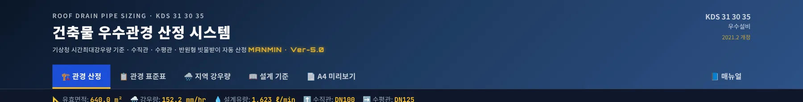
123456- 1관경 산정
- 2관경 표준표 — KDS 표 4.4-1 ~ 4.4-3 원문
- 3지역 강우량 — 전국 지점표
- 4설계 기준 — 산정 흐름 · 조문 해설
- 5A4 미리보기 — 결과서 · 인쇄 · JPG
- 6근거 기준 — KDS 31 30 35 우수설비(2021.2 개정)
1-3. 설치·보관·매뉴얼
| 항목 | 내용 |
|---|---|
| 설치 | 주소창의 설치 아이콘 또는 휴대폰 「홈 화면에 추가」로 앱처럼 쓸 수 있습니다. 한 번 연 뒤에는 인터넷 없이도 계산됩니다 |
| 입력값 보관 | 입력값은 저장되지 않습니다. 결과는 A4 결과서(PDF · JPG)로 남기십시오 |
| 매뉴얼 | 탭 막대 오른쪽 끝 「📘 매뉴얼」 — 인터넷 연결 시 새 창으로 열립니다 |
| 업데이트 | 새 버전이 올라오면 다음 접속 때 자동으로 바뀝니다. 화면이 예전 그대로면 새로 고침(Ctrl+F5) |
021분 따라하기
예제 A로 6단계를 따라 하면 수직관 DN 100 · 수평관 DN 125가 나옵니다.
- ① 지역 선택STEP 1에서 광역시도 「전북특별자치도」 → 시군 「익산」를 고릅니다. 관측소 군산 (인근) No.140 · 152.2 mm/h가 표시됩니다(3-1).
- ② 지붕 면적STEP 2에 수평투영 지붕면적 600㎡, 수직벽 면적 80㎡를 넣고 지붕 유형 「평지붕」을 둡니다(3-2).
- ③ 드레인·관 조건STEP 3에서 드레인 개수 4, 형태 「원형관(루프드레인)」, 수평관 기울기 1/100, 여유율 0%(KDS 원문)를 고릅니다(3-3).
- ④ 관경 결과오른쪽에 추천 수직관 DN 100이 크게 나오고, 아래 후보표에서 수평관 DN 125를 확인합니다(3-4 ~ 3-6).
- ⑤ 표준표·강우량 확인「📋 관경 표준표」에서 표 4.4-1 DN 100의 100mm/h 값(427㎡)을, 「🌧️ 지역 강우량」에서 지점 값을 대조합니다(3-8 · 3-9).
- ⑥ A4 결과서「📄 A4 미리보기」에서 「🖨️ 인쇄 · PDF」 또는 「🖼️ JPG 저장」으로 결과서를 남깁니다(3-12).
| 항목 | 예제 A 결과 |
|---|---|
| 지역 · 관측소 | 익산 — 군산 (인근) No.140 |
| 시간최대강우량 I | 152.2 mm/h (최대 발생 2025-09-07, 자료 1968~2025) |
| 유효면적 A + W/2 | 600.0 + 80.0 × ½ = 640.0 ㎡ |
| 100mm/h 환산면적 | 640.0 × 152.2 ÷ 100 = 974.1 ㎡ |
| 드레인당 환산면적 | 974.1 ÷ 4 = 243.5 ㎡ |
| 수직관 (표 4.4-1) | DN 100 — 100mm/h 열 427 ㎡ ≥ 243.5 ㎡ |
| 수평관 (표 4.4-2, 1/100) | DN 125 — 310 ㎡ ≥ 243.5 ㎡ |
| 설계유량(참고) | 640.0 × 152.2 ÷ 60 = 1,624 ℓ/min |
03화면별 기능 상세
3-1. 지역 선택 (STEP 1)
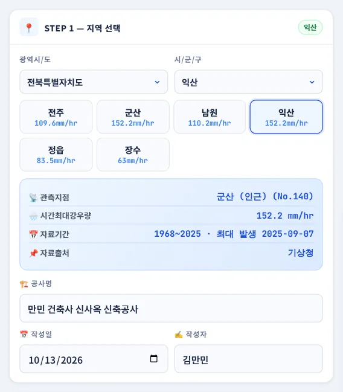
1234- 1광역시도
- 2시군구
- 3선택한 지역 카드 — 시간최대강우량 표시
- 4관측소 · 시간최대강우량 · 자료기간 · 최대 발생일
| 항목 | 내용 |
|---|---|
| 광역시도 · 시군구 | 목록에서 고르거나 아래 지역 카드를 누릅니다. 카드에는 지역별 시간최대강우량이 함께 보입니다 |
| 관측지점 | 기상청 ASOS 관측소 이름과 번호. 관측소가 없는 시군은 「(인근)」이 붙은 인근 관측소입니다 |
| 시간최대강우량 | 관측 이래 1시간 최다강수량의 최대값(~2025) — KDS 4.4.1의 「시간최대강우량」으로 씁니다(4-2) |
| 자료기간 · 최대 발생 | 1시간 최다강수량 자료가 있는 첫 해 ~ 2025년과 최대값이 관측된 날 |
| 공사명 · 작성일 · 작성자 | 카드 아래 입력란 — A4 결과서 표제에 들어갑니다 |
3-2. 지붕 면적·구간 (STEP 2)
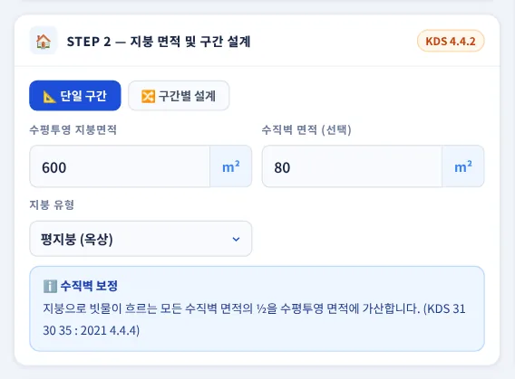
1234- 1단일 구간 / 구간별 설계 전환
- 2수평투영 지붕면적
- 3수직벽 면적 — ½을 더함
- 4지붕 유형 — 평지붕 · 경사지붕 · 밸리형
3-3. 드레인·관 조건 (STEP 3)
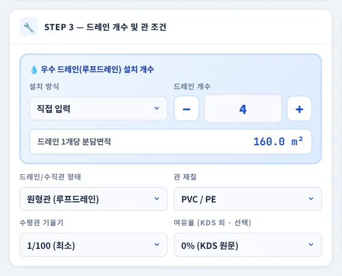
123456- 1드레인 개수(직접 입력)
- 2드레인 1개당 분담면적
- 3드레인/수직관 형태 — 원형관 · 반원형 빗물받이
- 4수평관 기울기 — 1/100 · 1/50 · 1/25
- 5여유율 — KDS 외 선택(기본 0%)
- 6연속 배출 유량 — KDS 4.4.6(선택)
| 항목 | 내용 |
|---|---|
| 설치 방식 | 「직접 입력」은 드레인 개수를 넣고, 「자동 산정」은 드레인 1개당 권장면적(150 ~ 300㎡ 중 선택)으로 개수를 정합니다. 권장면적은 KDS가 정한 값이 아닌 실무 참고값이며 화면에도 「실무 참고값 · KDS 외」로 표시합니다 |
| 드레인/수직관 형태 | 원형관(루프드레인)은 수직관 · 수평관을, 반원형 빗물받이는 여기에 표 4.4-3 빗물받이 관경을 더해 산정합니다 |
| 관 재질 | A4 결과서 수량표에 적는 정보입니다. 관경 계산에는 영향이 없습니다 |
| 수평관 기울기 | KDS 표 4.4-2의 구배별 표를 그대로 조회합니다. 별도 승인이 없으면 1/100 이상이 원칙입니다(4.4.3) |
| 여유율 | KDS 원문에는 없는 설계자 선택 항목입니다. 기본값 0%가 KDS 원문 계산입니다 |
| 빗물받이 기울기 | 반원형 빗물받이를 고르면 나타납니다. 표 4.4-3의 1/200 · 1/100 · 1/50 · 1/25 가운데 고르며 기본값은 1/200입니다(4-6) |
| 연속 배출 유량 | 펌프 · 배출기 · 공조기기가 우수관으로 연속 배출하는 유량(L/s). KDS 4.4.6에 따라 환산면적에 더합니다(4-7). 없으면 비워 둡니다 |
3-4. 산정 결과
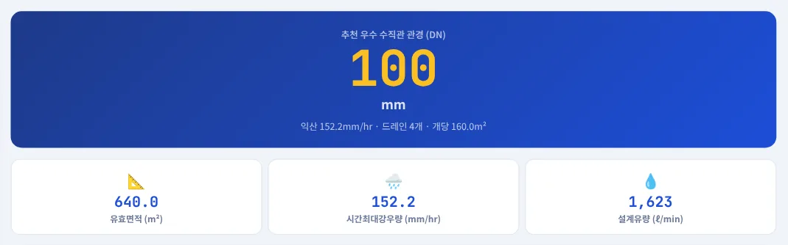
1234- 1추천 우수 수직관 DN
- 2유효면적(A + W/2)
- 3시간최대강우량
- 4설계유량(참고)
추천 수직관 아래에 지역 · 강우량 · 드레인 수 · 드레인 1개당 실제 분담면적이 한 줄로 나옵니다. 설계유량은 유효면적 × 강우량 ÷ 60(ℓ/min)으로, 관경 선정에는 쓰지 않는 참고값입니다.
3-5. 수직관
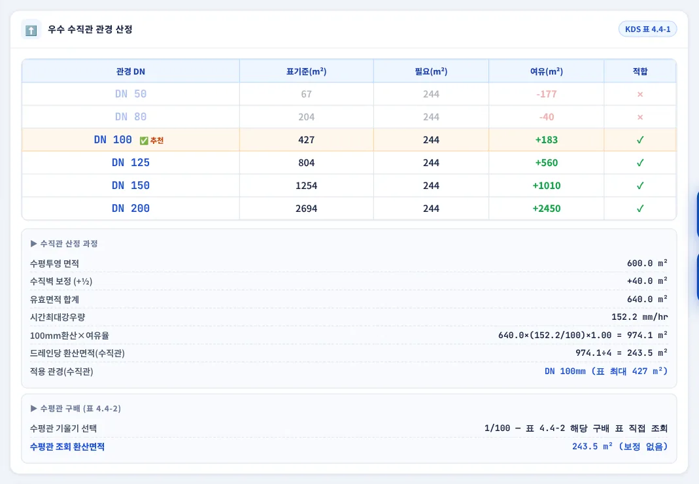
123456- 1추천 DN — 표 4.4-1 100mm/h 열
- 2유효면적 합계
- 3100mm/h 환산(× 여유율)
- 4드레인당 환산면적
- 5적용 관경
- 6수평관 구배 — 표 직접 조회
| 항목 | 내용 |
|---|---|
| 후보표 | DN 50 ~ 200 각각의 표 값(100mm/h 열) · 필요 면적 · 여유 · 적합을 보여 주고, 필요 면적 이상인 가장 작은 관경에 「✅ 추천」을 붙입니다 |
| 산정 과정 | 수평투영 면적 → 수직벽 ½ → 유효면적 → 강우량 → 100mm/h 환산 → 드레인당 환산면적 → 적용 관경 순으로 숫자를 보여 줍니다 |
| 수평관 구배 | 선택한 구배와 수평관 조회 면적(보정 없음)을 함께 표시합니다 |
3-6. 수평관
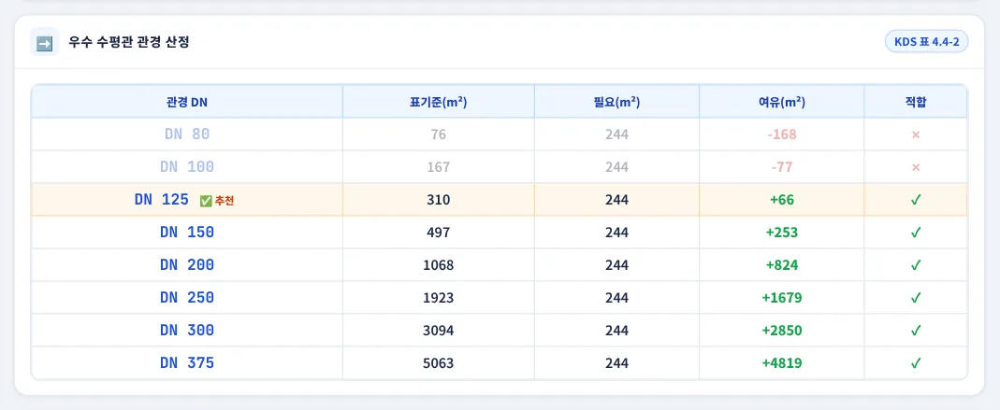
1- 1추천 DN — 표 4.4-2
선택한 구배의 표 4.4-2에서 DN 80 ~ 375를 같은 방법으로 비교합니다. 예제 A(1/100)는 드레인당 243.5㎡이므로 DN 125(310㎡)이 추천됩니다.
3-7. 드레인별 상세·수량
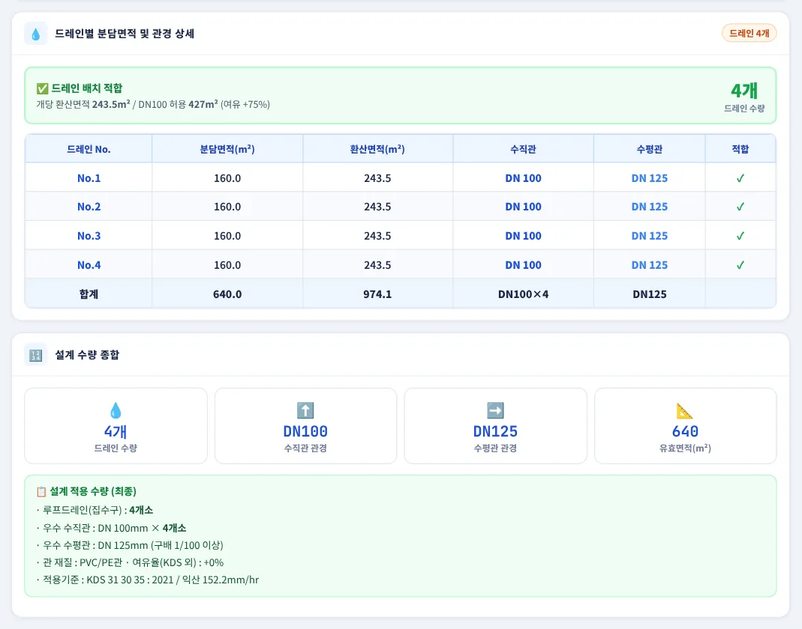
12- 1드레인별 분담면적 · 환산면적 · 관경
- 2설계 수량 종합
3-8. 관경 표준표 탭
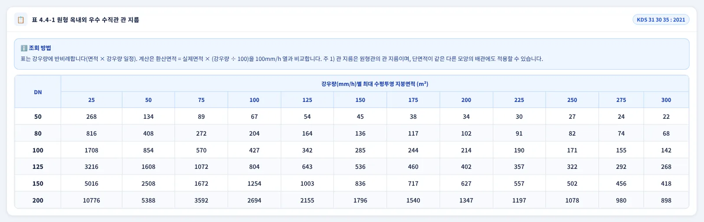
1- 1DN 100 — 100mm/h에서 427㎡
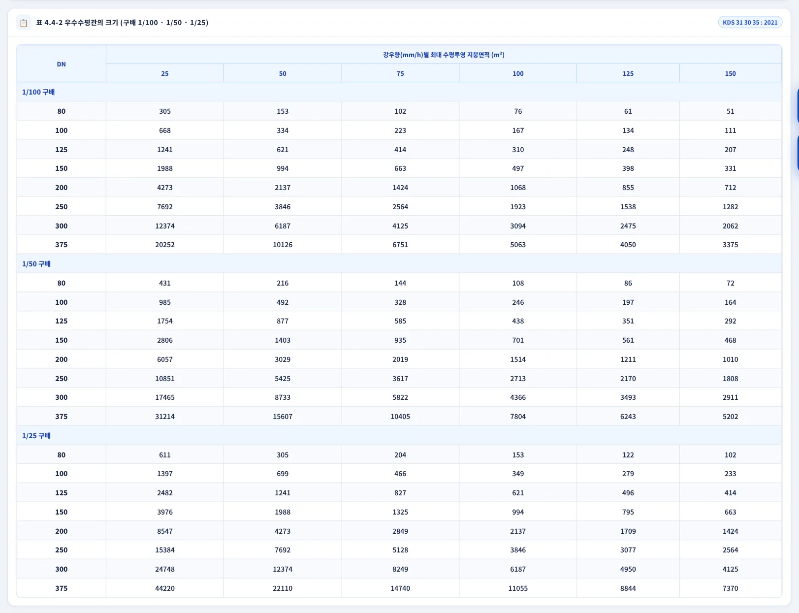
123- 11/100 구배
- 21/50 구배
- 31/25 구배
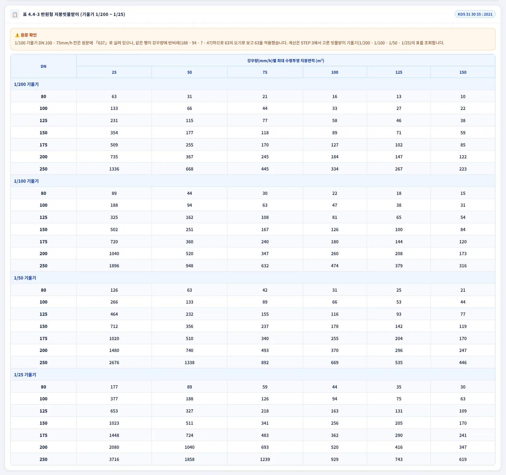
1- 1원문 확인 — 「637」은 63의 오기로 보고 적용
세 표는 고시 첨부 원문과 같은 값입니다. 계산은 각 표의 100mm/h 열을 씁니다(4-7).
3-9. 지역 강우량 탭
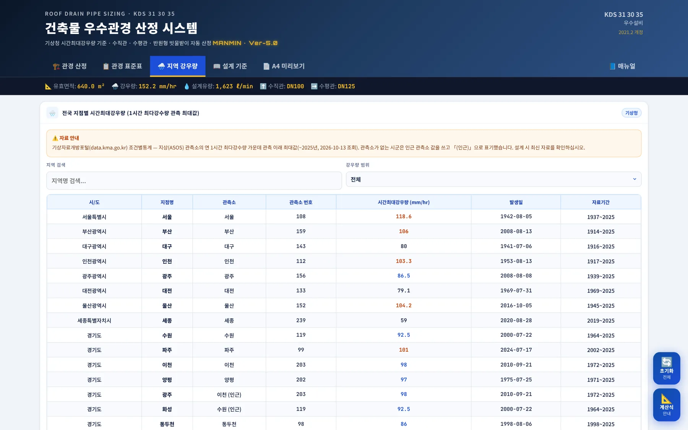
123- 1지역 검색
- 2강우량 범위
- 3지점 · 관측소 · 번호 · 최대값 · 발생일 · 자료기간
전국 69개 시군의 값을 표로 보여 줍니다. 같은 값은 부록 A2에도 실었습니다.
3-10. 설계 기준 탭
- 1산정 흐름 한눈에 보기
- 2KDS 31 30 35 주요 조문
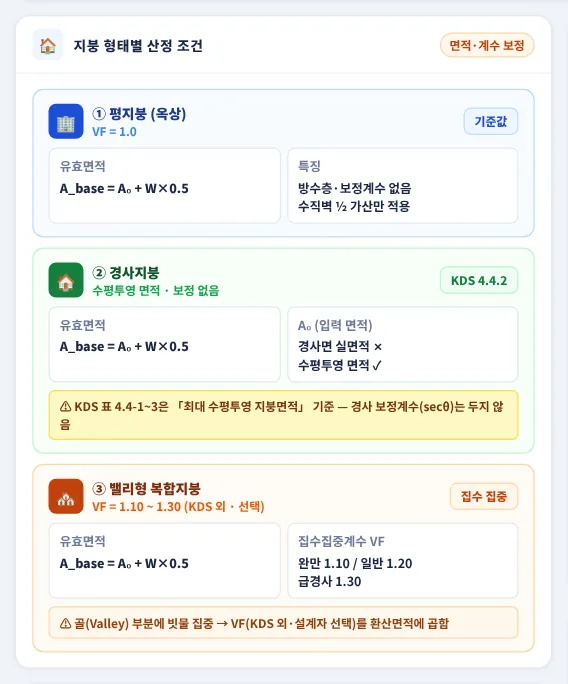
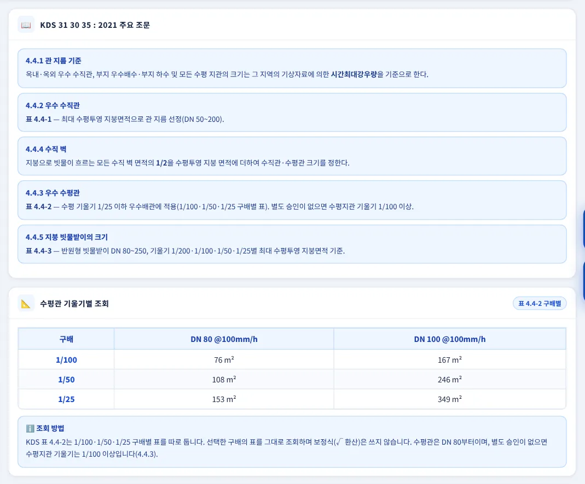
3-11. 계산식 안내 창
3-12. A4 결과서·출력
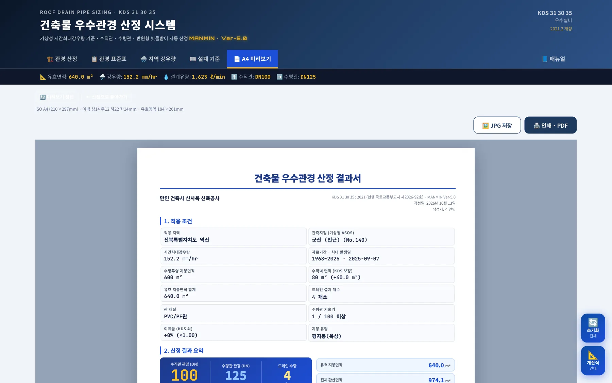
123- 1JPG 저장 — A4 쪽 단위 그림
- 2인쇄 · PDF — 인쇄 창 대상을 「PDF로 저장」으로
- 3A4 산정 결과서
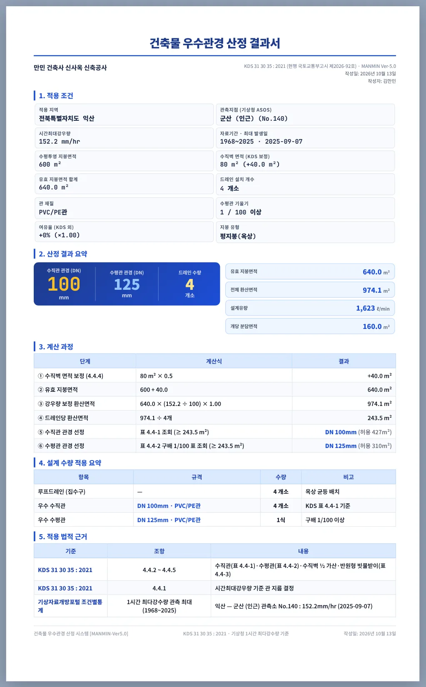
12345- 11. 적용 조건
- 22. 산정 결과 요약
- 33. 계산 과정
- 44. 설계 수량 적용 요약
- 55. 적용 법적 근거
3-13. 모바일
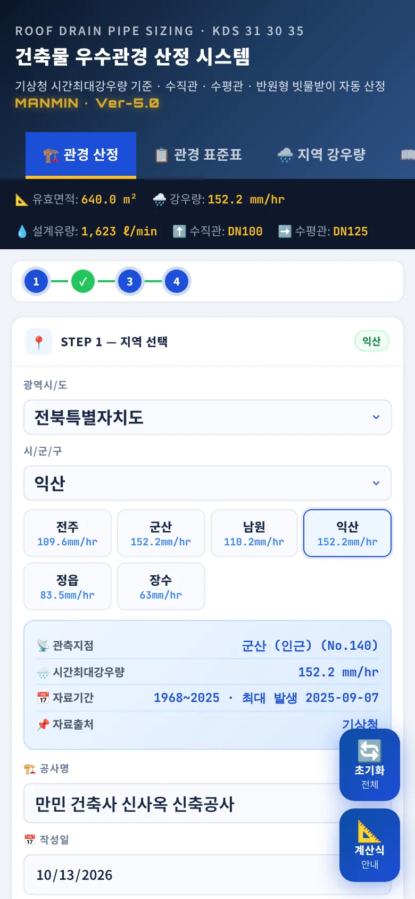
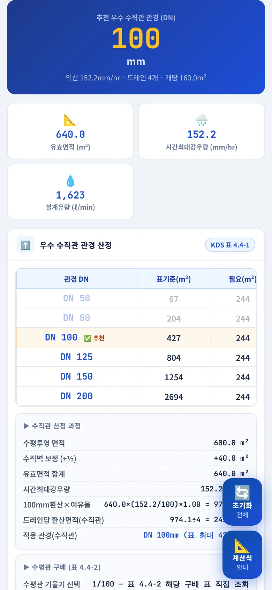
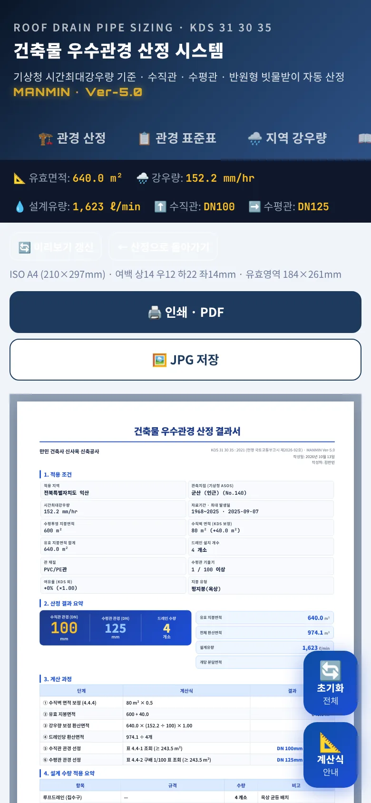
휴대폰에서는 입력 → 결과가 한 줄로 이어집니다. 탭 막대는 좌우로 밀어 「📘 매뉴얼」까지 볼 수 있습니다.
04기술기준 해설
4-1. 근거 체계
| 구분 | 내용 |
|---|---|
| 설계기준 | KDS 31 30 35 : 2021 우수설비 — 2021.2.19. 개정(표지 기준) |
| 고시 | 「설비(기계) 설계기준(KDS 31 00 00) 및 설비(기계) 표준시방서(KCS 31 00 00)」 — 국토교통부고시 제2021-203호(2021.2.25. 시행, 제정) → 제2024-436호(2024.8.28. 시행) → 제2026-92호(2026.3.1. 시행, 현행). 2024 개정 전문에도 우수설비는 2021판 그대로 수록 |
| 원문 대조 | 고시 첨부 전문(hwp)에서 4.4.1 ~ 4.4.6과 표 4.4-1 ~ 4.4-3을 추출해 앱 표와 셀 단위로 대조(2026-10-13) |
| 강우 자료 | 기상자료개방포털(data.kma.go.kr) 기후통계분석 → 조건별통계 — 지상(ASOS) · 강수량 · 년 단위 1시간 최다강수량 |
| 관련 법규(KDS 1.3.1) | 건축물의 설비기준 등에 관한 규칙 |
4-2. 시간최대강우량 (4.4.1)
KDS 4.4.1은 「옥내 우수 수직관과 옥외 우수 수직관, 부지 우수배수, 부지 하수 및 이들 배수관의 모든 수평 지관의 크기는 그 지역의 기상자료에 의한 시간최대강우량을 기준으로 한다」고 정합니다. 프로그램은 기상청 ASOS 관측소의 연 1시간 최다강수량 가운데 관측 이래 최대값(~2025년)을 씁니다.
| 항목 | 내용 |
|---|---|
| 왜 관측 최대값인가 | KDS에는 재현기간이나 통계 처리 방법이 없습니다. 조문의 「시간최대강우량」에 가장 가깝고 안전측인 값으로 관측 이래 최대값을 택했습니다 |
| 평년값이 아닌 이유 | 평년값(30년 평균)은 평균 기후를 나타내는 값이라 극값인 1시간 최다강수량에는 맞지 않습니다 |
| 관측소가 없는 시군 | 경기 광주 → 이천 · 화성 → 수원 · 안성 → 천안 · 삼척 → 동해 · 공주 → 부여 · 익산 → 군산 · 나주 → 광주. 앱에는 「(인근)」으로 표시합니다 |
| 최근 갱신 예 | 군산 152.2 mm/h(2025.9.7) · 서산 114.9 mm/h(2025.7.17) · 홍성 98.2 mm/h(2025.7.17) — 기록이 바뀌면 값도 바뀝니다 |
4-3. 수직관 — 표 4.4-1 (4.4.2)
「옥내외 우수 수직관의 관 지름은 표 4.4-1의 최대 수평투영 지붕 면적으로 선정한다.」 표는 DN 50 · 80 · 100 · 125 · 150 · 200, 강우량 25 ~ 300mm/h(25 간격) 12열입니다.
| DN | 50 mm/h | 100 mm/h | 200 mm/h |
|---|---|---|---|
| 50 | 134 | 67 | 34 |
| 80 | 408 | 204 | 102 |
| 100 | 854 | 427 | 214 |
| 125 | 1,608 | 804 | 402 |
| 150 | 2,508 | 1,254 | 627 |
| 200 | 5,388 | 2,694 | 1,347 |
주 1) 관 지름은 원형관의 관 지름이며, 단면적이 같은 다른 모양의 배관에도 이 표를 적용할 수 있습니다.
4-4. 수평관 — 표 4.4-2 (4.4.3)
「수평 기울기가 1/25 이하인 건축물 우수배관과 부지 우⋅오수배관 및 수평 분기관의 크기는 표 4.4-2의 최대수평투영 지붕 면적을 기준으로 선정한다. 별도의 승인이 없으면 수평지관의 기울기는 1/100 이상으로 한다.」 표는 구배 1/100 · 1/50 · 1/25마다 DN 80 ~ 375, 강우량 25 ~ 150mm/h입니다.
| DN | 1/100 | 1/50 | 1/25 |
|---|---|---|---|
| 80 | 76 | 108 | 153 |
| 100 | 167 | 246 | 349 |
| 125 | 310 | 438 | 621 |
| 150 | 497 | 701 | 994 |
| 200 | 1,068 | 1,514 | 2,137 |
(100 mm/h 열, ㎡ — DN 250 · 300 · 375는 관경 표준표 탭)
4-5. 수직 벽 ½ (4.4.4)
「루프드레인과 우수관의 관 지름을 정할 때, 지붕으로 빗물이 흐르는 모든 수직 벽 면적의 1/2을 수평투영 지붕 면적에 더하여 옥내와 옥외의 우수수직관과 우수수평관의 크기를 정한다.」 비가 비스듬히 들이칠 때 벽면에 맞은 빗물이 지붕으로 흘러드는 몫을 반영한 것입니다.
4-6. 반원형 빗물받이 — 표 4.4-3 (4.4.5)
「반원형의 빗물받이 크기는 표 4.4-3의 최대 수평투영 지붕 면적을 기준으로 한다.」 표는 기울기 1/200 · 1/100 · 1/50 · 1/25마다 DN 80 ~ 250입니다. 프로그램은 STEP 3의 「빗물받이 기울기」(1/200 · 1/100 · 1/50 · 1/25, 기본 1/200)로 표를 고릅니다. 수평관 구배와 따로 정합니다(v5.0.13).
4-7. 프로그램의 계산 순서
| 항목 | 내용 |
|---|---|
| 반비례 환산 | KDS 표는 같은 DN에서 「면적 × 강우량」이 일정합니다(예: 표 4.4-1 DN 100 — 1,708 × 25 = 427 × 100 = 42,700). 그래서 어떤 강우량이든 100mm/h 열 하나로 비교할 수 있습니다 |
| SF · VF | 여유율 SF와 밸리 집중계수 VF는 KDS 외 선택 계수 — 기본 SF 1.00 · 평지붕 · 경사지붕 VF 1.00(4-8) |
| 연속흐름 예 | 예제 A에 연속 배출 0.5 L/s를 넣으면 AQ = 0.5 ÷ 0.017 × 9 × 0.25 = 66.2㎡ → 환산면적 974.1 + 66.2 = 1,040.3㎡ → 드레인당 260.1㎡ — 수직관은 그대로 DN 100(427㎡). 설계유량에도 0.5 × 60 = 30 ℓ/min을 더합니다 |
| 검증 | 무작위 입력 3,000건(면적 · 수직벽 · 강우량 · 드레인 수 · 구배 · 빗물받이 기울기 · 연속 배출 · 지붕 유형)에서 앱 결과와 KDS 원문 표 독립 구현 결과가 모두 같았습니다 |
4-8. KDS 외 선택 계수
| 계수 | 내용 |
|---|---|
| 여유율 SF | 0 · 10 · 20 · 30% — 기본 0%(KDS 원문). 기후변화 대응 등 설계자 판단으로 더할 때만 고릅니다 |
| 밸리 집중계수 VF | 1.10 · 1.20 · 1.30 — 골(Valley)로 빗물이 몰리는 지붕에서 설계자 판단으로 고릅니다 |
| 드레인 권장면적 | 자동 산정의 150 ~ 300㎡ — 실무 참고값(화면에 「KDS 외」 표기) |
| 경사 보정(secθ) | v5.0.10에서 폐지 — KDS 표는 수평투영 면적 기준이므로 경사면 실면적으로 키우지 않습니다 |
4-9. 프로그램이 다루지 않는 것
| 항목 | 내용 |
|---|---|
| 4.5 ~ 4.8 | 지하수 배수(DN 100 이상 유공관) · 건축물 지하 배수관 · 집수정과 펌프장치 · 공동구 배수설비 |
| 1.6 기본원칙 | 공공하수도 · 우수전용관 연결(조례) · 오수관 접속 금지 · 합류식 연결부 트랩 · 흐름 방향 관경 축소 금지 · 청소구 |
| 4.1 ~ 4.3 | 트랩 · 우수 수직관 연결 · 루프드레인(KS F 4522) 설치와 마감 |
| 제품 성능 | 루프드레인 · 사이펀 배수 제품의 배수 성능은 제조사 자료로 확인 |
4-10. v5.0.10 정정 내역
| 항목 | 기존 | 변경 |
|---|---|---|
| 표 4.4-1 수직관 | 원문의 약 1/4 값 · DN 65 행 | 원문 12열 · DN 50 ~ 200 |
| 표 4.4-2 수평관 | 1/100 표 + √(100/n) 근사 | 구배별 원문 표 직접 조회 · DN 80 ~ 375 |
| 표 4.4-3 빗물받이 | 폭 76 ~ 305mm 표 | 원문 DN 80 ~ 250 · 기울기별 |
| 지역 강우량 | 출처 불명 값 · 지점번호 18곳 오기 · 「1991~2020 평년값」 | 관측 최대값 · 발생일 · 관측소 · 「(인근)」 |
| 경사지붕 | 면적 × secθ | 수평투영 면적 그대로 |
| 여유율 | +20% 「권장」 기본 | KDS 외 선택 · 기본 0% |
| 조항 · 고시 | 수직벽 4.4.2 · 빗물받이 4.4.4 · 제2021-203호 | 4.4.4 · 4.4.5 · 현행 제2026-92호 |
05실무 작업 방법
5-1. 단계별 절차
- 배수 구역 나누기지붕 평면에서 드레인이 받는 구역을 정하고 구역별 수평투영 면적을 구합니다. 파라펫 · 옥탑 외벽처럼 빗물이 지붕으로 흐르는 벽 면적도 함께 셉니다.
- 강우량 확인대지 소재지의 관측소 값을 고르고, 실시설계 단계라면 기상자료개방포털에서 최신 최대값을 확인합니다.
- 드레인 수 · 구배 결정드레인 수와 수평 배관 구배(원칙 1/100 이상)를 정합니다. 반원형 빗물받이를 쓰면 형태를 바꿉니다.
- 관경 산정수직관 · 수평관(· 빗물받이) DN을 확인하고, 구역 면적이 서로 다르면 구간별 설계로 넣습니다.
- 도면 반영A4 결과서를 설계 근거로 남기고 평면 · 계통도에 DN을 적습니다. 흐름 방향으로 관경을 줄이지 않습니다(KDS 1.6.4).
5-2. 도면 반영 전 확인
| 항목 | 확인 |
|---|---|
| 면적 | 경사지붕도 수평투영 면적인가 · 수직벽 면적을 빠뜨리지 않았나 |
| 연속 배출 | 옥상 기계 · 공조 배수가 우수관으로 들어가면 STEP 3 「연속 배출 유량」에 넣었나(4.4.6) |
| 구배 | 수평관 구배가 1/100 이상인가(별도 승인 없을 때) |
| 연결 | 오수관 · 잡배수관 접속 금지 · 합류식 연결부 트랩 · 청소구(KDS 1.6) |
| 조례 | 공공하수도 · 우수전용관 연결과 우수 처리 방법(KDS 1.6.1) |
5-3. 예제 B — 반원형 빗물받이
예제 A와 같은 지역 · 면적 · 드레인 수에 형태 「반원형 빗물받이」, 수평관 구배 1/50 · 빗물받이 기울기 1/50을 고른 경우입니다. 빗물받이를 기본값 1/200으로 두면 같은 면적에서 DN 250(334㎡)이 나옵니다.
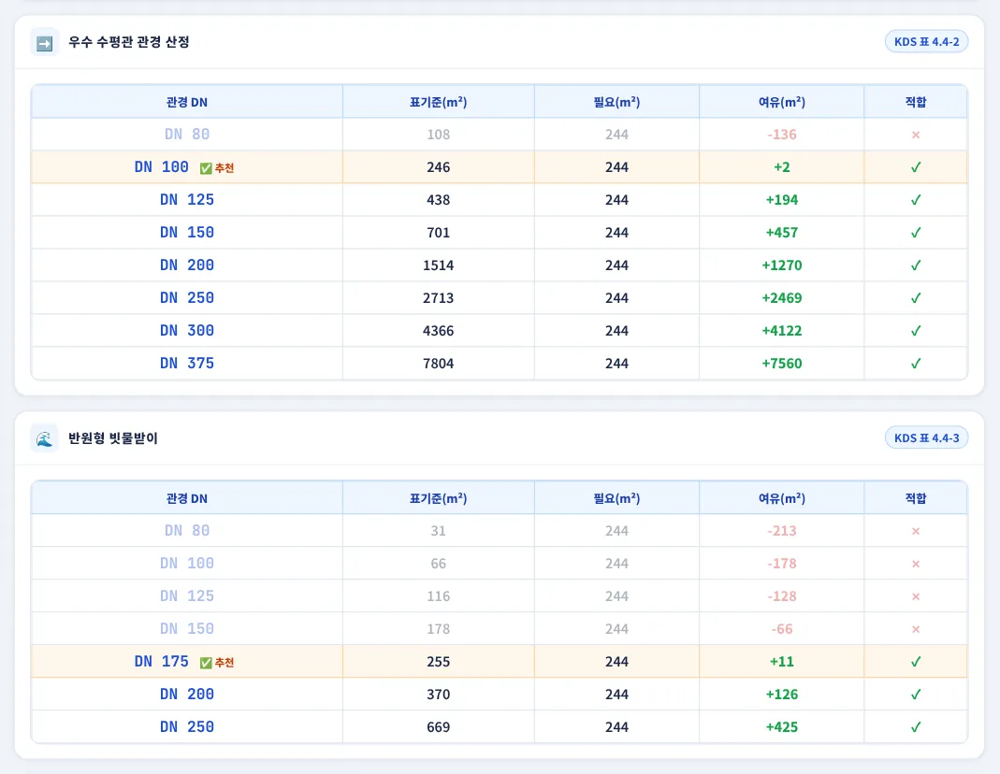
12- 1수평관 — 표 4.4-2 1/50 구배
- 2반원형 빗물받이 — 표 4.4-3 1/50 기울기
| 항목 | 예제 B 결과 |
|---|---|
| 지역 · 관측소 | 익산 — 군산 (인근) No.140 |
| 시간최대강우량 I | 152.2 mm/h (최대 발생 2025-09-07, 자료 1968~2025) |
| 유효면적 A + W/2 | 600.0 + 80.0 × ½ = 640.0 ㎡ |
| 100mm/h 환산면적 | 640.0 × 152.2 ÷ 100 = 974.1 ㎡ |
| 드레인당 환산면적 | 974.1 ÷ 4 = 243.5 ㎡ |
| 수직관 (표 4.4-1) | DN 100 — 100mm/h 열 427 ㎡ ≥ 243.5 ㎡ |
| 수평관 (표 4.4-2, 1/50) | DN 100 — 246 ㎡ ≥ 243.5 ㎡ |
| 반원형 빗물받이 (표 4.4-3, 1/50) | DN 175 — 255 ㎡ ≥ 243.5 ㎡ |
| 설계유량(참고) | 640.0 × 152.2 ÷ 60 = 1,624 ℓ/min |
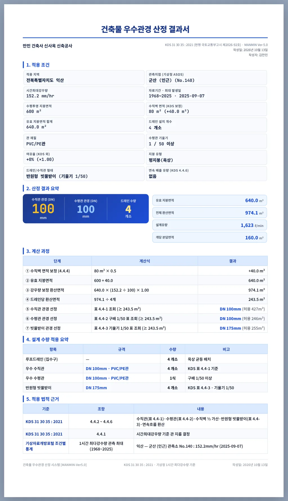
12- 13. 계산 과정 — 빗물받이 관경 선정
- 24. 설계 수량 — 반원형 빗물받이
5-4. 예제 C — 구간별 설계
지붕을 A구간(400㎡ · 수직벽 60㎡)과 B구간(200㎡ · 수직벽 20㎡)으로 나눠 넣은 경우입니다. 합계가 예제 A와 같으므로 결과도 같습니다.
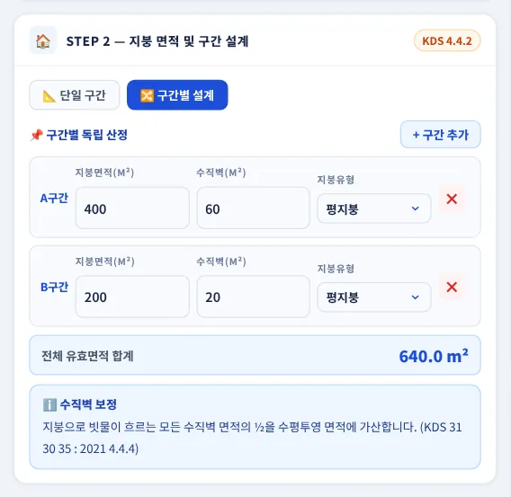
123- 1구간별 설계
- 2구간 입력 — 이름 · 면적 · 수직벽 · 지붕 유형
- 3유효면적 합계
| 항목 | 예제 C 결과 |
|---|---|
| 지역 · 관측소 | 익산 — 군산 (인근) No.140 |
| 시간최대강우량 I | 152.2 mm/h (최대 발생 2025-09-07, 자료 1968~2025) |
| 유효면적 A + W/2 | 600.0 + 80.0 × ½ = 640.0 ㎡ |
| 100mm/h 환산면적 | 640.0 × 152.2 ÷ 100 = 974.1 ㎡ |
| 드레인당 환산면적 | 974.1 ÷ 4 = 243.5 ㎡ |
| 수직관 (표 4.4-1) | DN 100 — 100mm/h 열 427 ㎡ ≥ 243.5 ㎡ |
| 수평관 (표 4.4-2, 1/100) | DN 125 — 310 ㎡ ≥ 243.5 ㎡ |
| 설계유량(참고) | 640.0 × 152.2 ÷ 60 = 1,624 ℓ/min |
06문제 해결·FAQ
| 증상·질문 | 답 |
|---|---|
| 결과가 나오지 않습니다 | 지역을 고르고 지붕면적을 0보다 크게 넣어야 계산됩니다. |
| 예전 버전보다 관경이 작게 나옵니다 | v5.0.10에서 KDS 원문 표로 바로잡았기 때문입니다. 예전 표는 원문의 약 1/4 값이라 관경을 크게 냈습니다(4-10). |
| 경사각 입력란이 없어졌습니다 | KDS 표는 수평투영 면적 기준이라 경사 보정을 폐지했습니다. 평면도상의 투영 면적을 넣으십시오. |
| 우리 시군 강우량이 이웃 시보다 큽니다 | 관측소가 없는 시군은 인근 관측소 값을 씁니다. 예: 익산은 군산 관측소 값입니다. |
| 여유율을 꼭 넣어야 하나요 | KDS에는 없습니다. 기본 0%로 두고, 발주처 지침이나 설계자 판단이 있을 때만 고르십시오. |
| 수평관이 DN 80부터입니다 | KDS 표 4.4-2가 DN 80부터 정합니다. |
| 빗물받이 관경이 예전보다 크게 나옵니다 | v5.0.13부터 빗물받이는 자체 기울기(기본 1/200)로 표 4.4-3을 조회합니다. 이전에는 수평관 구배(1/100 이상)를 그대로 써서 1/200으로 놓는 빗물받이를 작게 골랐습니다. 실제 시공 기울기를 고르십시오. |
| JPG 저장이 되지 않습니다 | 「A4 미리보기」 탭에서 눌러야 합니다. 그림 저장 라이브러리는 인터넷에서 내려받으므로, 오프라인에서 실패하면 인터넷에 연결해 한 번 연 뒤 다시 시도합니다. |
| 매뉴얼 버튼을 눌러도 열리지 않습니다 | 매뉴얼은 인터넷에 연결되어 있을 때만 열립니다. 휴대폰에서는 탭 막대를 왼쪽으로 밀면 버튼이 보입니다. |
A부록
A1. 예제 입력값
| 항목 | 예제 A | 예제 B | 예제 C |
|---|---|---|---|
| 지역 | 전북 익산 (군산 (인근) No.140) | 전북 익산 | 전북 익산 |
| 면적 · 수직벽 | 600㎡ · 80㎡ | 600㎡ · 80㎡ | A구간 400㎡ · 60㎡ + B구간 200㎡ · 20㎡ |
| 드레인 · 형태 | 4개 · 원형관 | 4개 · 반원형 빗물받이 | 4개 · 원형관 |
| 구배 · 여유율 | 1/100 · 0% | 1/50 · 0% | 1/100 · 0% |
| 결과 | 수직관 DN 100 · 수평관 DN 125 | 수직관 DN 100 · 수평관 DN 100 · 빗물받이 DN 175 | 수직관 DN 100 · 수평관 DN 125 |
A2. 지점별 시간최대강우량
기상자료개방포털 조건별통계(지상 ASOS · 강수량 · 년) — 연 1시간 최다강수량의 관측 최대값. 2026-10-13 조회.
| 시도 | 시군 | 관측소 | 번호 | mm/h | 최대 발생일 | 자료기간 |
|---|---|---|---|---|---|---|
| 서울특별시 | 서울 | 서울 | 108 | 118.6 | 1942-08-05 | 1937~2025 |
| 부산광역시 | 부산 | 부산 | 159 | 106.0 | 2008-08-13 | 1914~2025 |
| 대구광역시 | 대구 | 대구 | 143 | 80.0 | 1941-07-06 | 1916~2025 |
| 인천광역시 | 인천 | 인천 | 112 | 103.3 | 1953-08-13 | 1917~2025 |
| 광주광역시 | 광주 | 광주 | 156 | 86.5 | 2008-08-08 | 1939~2025 |
| 대전광역시 | 대전 | 대전 | 133 | 79.1 | 1969-07-31 | 1969~2025 |
| 울산광역시 | 울산 | 울산 | 152 | 104.2 | 2016-10-05 | 1945~2025 |
| 세종특별자치시 | 세종 | 세종 | 239 | 59.0 | 2020-08-28 | 2019~2025 |
| 경기도 | 수원 | 수원 | 119 | 92.5 | 2000-07-22 | 1964~2025 |
| 경기도 | 파주 | 파주 | 99 | 101.0 | 2024-07-17 | 2002~2025 |
| 경기도 | 이천 | 이천 | 203 | 98.0 | 2010-09-21 | 1972~2025 |
| 경기도 | 양평 | 양평 | 202 | 97.0 | 1975-07-25 | 1971~2025 |
| 경기도 | 광주 | 이천 (인근) | 203 | 98.0 | 2010-09-21 | 1972~2025 |
| 경기도 | 화성 | 수원 (인근) | 119 | 92.5 | 2000-07-22 | 1964~2025 |
| 경기도 | 동두천 | 동두천 | 98 | 86.0 | 1998-08-06 | 1998~2025 |
| 경기도 | 안성 | 천안 (인근) | 232 | 90.0 | 1976-08-14 | 1972~2025 |
| 강원특별자치도 | 춘천 | 춘천 | 101 | 62.0 | 1988-07-13 | 1966~2025 |
| 강원특별자치도 | 강릉 | 강릉 | 105 | 100.5 | 2002-08-31 | 1928~2025 |
| 강원특별자치도 | 원주 | 원주 | 114 | 79.5 | 1976-08-13 | 1971~2025 |
| 강원특별자치도 | 속초 | 속초 | 90 | 91.3 | 2023-08-10 | 1968~2025 |
| 강원특별자치도 | 태백 | 태백 | 216 | 75.5 | 2005-07-01 | 1985~2025 |
| 강원특별자치도 | 삼척 | 동해 (인근) | 106 | 67.4 | 2019-10-03 | 1992~2025 |
| 강원특별자치도 | 홍천 | 홍천 | 212 | 89.0 | 2006-07-15 | 1971~2025 |
| 충청북도 | 청주 | 청주 | 131 | 91.8 | 2017-07-16 | 1967~2025 |
| 충청북도 | 충주 | 충주 | 127 | 89.5 | 1989-07-25 | 1972~2025 |
| 충청북도 | 제천 | 제천 | 221 | 92.5 | 2007-08-05 | 1973~2025 |
| 충청북도 | 보은 | 보은 | 226 | 95.0 | 1998-08-12 | 1972~2025 |
| 충청남도 | 서산 | 서산 | 129 | 114.9 | 2025-07-17 | 1968~2025 |
| 충청남도 | 천안 | 천안 | 232 | 90.0 | 1976-08-14 | 1972~2025 |
| 충청남도 | 공주 | 부여 (인근) | 236 | 116.0 | 1999-09-10 | 1973~2025 |
| 충청남도 | 보령 | 보령 | 235 | 98.0 | 2010-07-23 | 1972~2025 |
| 충청남도 | 부여 | 부여 | 236 | 116.0 | 1999-09-10 | 1973~2025 |
| 충청남도 | 금산 | 금산 | 238 | 84.1 | 2024-07-10 | 1972~2025 |
| 충청남도 | 홍성 | 홍성 | 177 | 98.2 | 2025-07-17 | 2016~2025 |
| 전북특별자치도 | 전주 | 전주 | 146 | 109.6 | 1951-05-26 | 1918~2025 |
| 전북특별자치도 | 군산 | 군산 | 140 | 152.2 | 2025-09-07 | 1968~2025 |
| 전북특별자치도 | 남원 | 남원 | 247 | 110.2 | 2024-08-26 | 1973~2025 |
| 전북특별자치도 | 익산 | 군산 (인근) | 140 | 152.2 | 2025-09-07 | 1968~2025 |
| 전북특별자치도 | 정읍 | 정읍 | 245 | 83.5 | 2010-07-01 | 1972~2025 |
| 전북특별자치도 | 장수 | 장수 | 248 | 63.0 | 2009-07-15 | 1988~2025 |
| 전라남도 | 목포 | 목포 | 165 | 64.5 | 2004-07-03 | 1927~2025 |
| 전라남도 | 여수 | 여수 | 168 | 77.4 | 1981-09-24 | 1942~2025 |
| 전라남도 | 순천 | 순천 | 174 | 82.5 | 2014-08-25 | 2011~2025 |
| 전라남도 | 나주 | 광주 (인근) | 156 | 86.5 | 2008-08-08 | 1939~2025 |
| 전라남도 | 장흥 | 장흥 | 260 | 95.5 | 2000-08-04 | 1972~2025 |
| 전라남도 | 강진 | 강진군 | 259 | 96.5 | 2024-09-21 | 2010~2025 |
| 전라남도 | 해남 | 해남 | 261 | 80.5 | 1998-08-02 | 1971~2025 |
| 전라남도 | 고흥 | 고흥 | 262 | 106.6 | 2017-06-26 | 1972~2025 |
| 전라남도 | 광양 | 광양시 | 266 | 106.5 | 2011-08-07 | 2011~2025 |
| 경상북도 | 포항 | 포항 | 138 | 93.4 | 1998-09-30 | 1949~2025 |
| 경상북도 | 안동 | 안동 | 136 | 65.5 | 2010-08-13 | 1973~2025 |
| 경상북도 | 경주 | 경주시 | 283 | 56.4 | 2022-09-06 | 2010~2025 |
| 경상북도 | 구미 | 구미 | 279 | 58.6 | 2017-08-19 | 1973~2025 |
| 경상북도 | 영주 | 영주 | 272 | 86.0 | 1978-08-16 | 1972~2025 |
| 경상북도 | 울진 | 울진 | 130 | 104.5 | 2019-10-03 | 1971~2025 |
| 경상북도 | 영천 | 영천 | 281 | 61.5 | 1988-08-16 | 1972~2025 |
| 경상북도 | 상주 | 상주 | 137 | 54.2 | 2020-08-30 | 2002~2025 |
| 경상남도 | 창원 | 창원 | 155 | 104.9 | 2024-09-21 | 1985~2025 |
| 경상남도 | 진주 | 진주 | 192 | 80.0 | 1970-08-07 | 1969~2025 |
| 경상남도 | 통영 | 통영 | 162 | 86.5 | 1999-07-30 | 1968~2025 |
| 경상남도 | 밀양 | 밀양 | 288 | 70.0 | 1998-09-30 | 1973~2025 |
| 경상남도 | 거창 | 거창 | 284 | 83.0 | 2007-08-08 | 1972~2025 |
| 경상남도 | 합천 | 합천 | 285 | 78.6 | 2025-07-19 | 1973~2025 |
| 경상남도 | 거제 | 거제 | 294 | 96.5 | 2001-07-05 | 1973~2025 |
| 경상남도 | 함양 | 함양군 | 264 | 62.5 | 2011-08-07 | 2010~2025 |
| 제주특별자치도 | 제주 | 제주 | 184 | 105.0 | 1927-09-11 | 1923~2025 |
| 제주특별자치도 | 서귀포 | 서귀포 | 189 | 120.7 | 2018-09-01 | 1961~2025 |
| 제주특별자치도 | 성산 | 성산 | 188 | 101.0 | 1981-08-10 | 1972~2025 |
| 제주특별자치도 | 고산 | 고산 | 185 | 73.8 | 2021-09-02 | 1988~2025 |
A3. 버전 변경 내역
| 버전 | 내용 |
|---|---|
| Ver-5.0 · v5.0.13 (2026-10-13) | 빗물받이 기울기 선택(1/200 ~ 1/25, 기본 1/200) · A4 결과서에 빗물받이 형태 · 관경 · 수량 행 · 연속 배출 유량 입력(KDS 4.4.6) · 드레인 권장면적 「실무 참고값 · KDS 외」 표기 |
| Ver-5.0 · v5.0.12 (2026-10-13) | 사용자 매뉴얼 연결(탭 막대 「📘 매뉴얼」) |
| Ver-5.0 · v5.0.11 (2026-10-13) | 헤더 요약 스트립 값 표시 · 헤더 근거 「KDS 31 30 35 우수설비 2021.2 개정」 |
| Ver-5.0 · v5.0.10 (2026-10-13) | KDS 원문 표 4.4-1 ~ 4.4-3 · 기상청 1시간 최다강수량 관측 최대값 · 경사 보정 폐지 · 여유율 기본 0% · 조항 · 고시 표기(4-10) |
| Ver-5.0 · v5.0.0 ~ v5.0.9 (2026-08 ~ 09) | 디자인 통일(헤더 · 탭 막대 · 요약 스트립), A4 미리보기 · JPG 저장, 오프라인 캐시 개선 |
A4. 용어
| 용어 | 뜻 |
|---|---|
| 수평투영 지붕면적 | 지붕을 수평면에 투영한 면적 — KDS 표 4.4-1 ~ 4.4-3의 기준 면적 |
| 시간최대강우량 | 그 지역 기상자료에 의한 1시간 최대 강우량 — KDS 4.4.1. 프로그램은 1시간 최다강수량의 관측 최대값을 씀 |
| 1시간 최다강수량 | 기상청이 해마다 집계하는 그해 가장 많은 1시간 강수량 |
| ASOS | 종관기상관측장비 — 기상청 지상 관측소 |
| 루프드레인 | 지붕 빗물을 받아 우수관으로 보내는 배수구 — KS F 4522 |
| DN | 호칭지름(mm) |
| 구배 | 배관의 기울기(1/100 = 100m에 1m) |